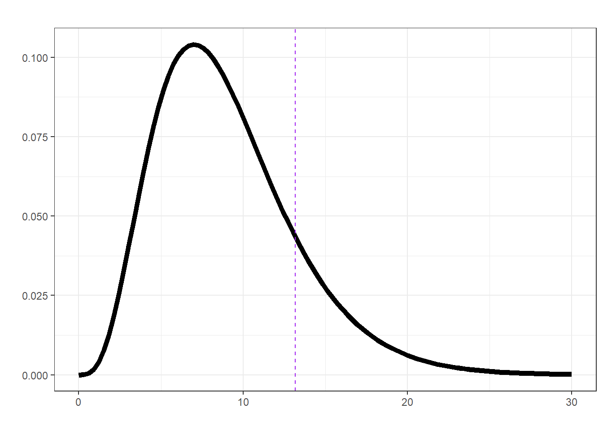

## packages
require(tidyverse)
require(readxl)
require(ggimage)
require(extrafont)1 Surprise Song Outfits
1.1 Data wrangling
Note
All data paths are relative to the root of the GitHub repository
## reading in data
surpriseSongsDressColours <- readxl::read_excel("raw_data/surprise_songs.xlsx", sheet = "List")
surpriseSongsDressColours$Date <- as.Date(surpriseSongsDressColours$Date)
## map hex colour to outfit
dressColorMapping <- unique(surpriseSongsDressColours %>% select(DressName, ColourHex1))
colorPaletteDresses <- setNames(dressColorMapping$ColourHex1, dressColorMapping$DressName)
pathToDressColours <- "dress_images/images_high_res/cropped/"## Need only consider first element of each concerts as the
## same outfit was worn for all surprise songs
## for anyone concert
oneRowPerConcert <- surpriseSongsDressColours %>%
group_by(Date) %>%
arrange(Date, Order) %>%
slice(1) %>%
ungroup()
oneRowPerConcert# A tibble: 147 × 26
`Song title` Mashups Mashup Mashup2 Guest City State Country Stadium
<chr> <chr> <chr> <chr> <chr> <chr> <chr> <chr> <chr>
1 mirrorball None <NA> <NA> <NA> Glen… Ariz… US State …
2 this is me trying None <NA> <NA> <NA> Glen… Ariz… US State …
3 Our Song None <NA> <NA> <NA> Las … Neva… US Allegi…
4 cowboy like me None <NA> <NA> Marc… Las … Neva… US Allegi…
5 Sad Beautiful Tragic None <NA> <NA> <NA> Arli… Texas US AT&T
6 Death By A Thousand… None <NA> <NA> <NA> Arli… Texas US AT&T
7 Speak Now None <NA> <NA> <NA> Tampa Flor… US Raymon…
8 The Great War None <NA> <NA> Aaro… Tampa Flor… US Raymon…
9 mad woman None <NA> <NA> <NA> Tampa Flor… US Raymon…
10 Wonderland None <NA> <NA> <NA> Hous… Texas US NRG
# ℹ 137 more rows
# ℹ 17 more variables: Date <date>, DressName <chr>, Legs <chr>,
# Relationship <chr>, Start <dttm>, End <dttm>, Colour1 <chr>,
# ColourHex1 <chr>, ColourRGB1 <chr>, Colour2 <chr>, ColourHex2 <chr>,
# ColourRGB2 <chr>, `Night #` <dbl>, Order <dbl>, Instrument <chr>,
# `Special Annoucement` <chr>, Notes <chr>## map outfits to the corresponding images
oneRowPerConcert %>%
count(DressName) %>%
mutate(
percentage = n / sum(n) * 100,
imagePath = case_when(
DressName == "Pink" ~paste0(pathToDressColours, "pink.jpg"),
DressName == "Green" ~paste0(pathToDressColours, "green.jpg"),
DressName == "Yellow" ~paste0(pathToDressColours, "yellow.jpg"),
DressName == "Blue" ~paste0(pathToDressColours, "blue.jpg"),
DressName == "Flamingo pink" ~ paste0(pathToDressColours,"flamingo_pink.jpg"),
DressName == "Ocean blue" ~ paste0(pathToDressColours,"ocean_blue.jpg"),
DressName == "Sunset orange" ~ paste0(pathToDressColours,"sunset_orange.jpg"),
DressName == "Cotton candy" ~paste0(pathToDressColours, "cotton_candy.jpg"),
DressName == "Blurple" ~paste0(pathToDressColours, "blurple.jpg"),
DressName == "Grapefruit" ~ paste0(pathToDressColours,"grapefruit.jpg"),
DressName == "Popsicle" ~ paste0(pathToDressColours,"popsicle.jpg"),
TRUE ~ NA_character_
)) -> outfits
outfits# A tibble: 11 × 4
DressName n percentage imagePath
<chr> <int> <dbl> <chr>
1 Blue 9 6.12 dress_images/images_high_res/cropped/blue.jpg
2 Blurple 7 4.76 dress_images/images_high_res/cropped/blurple.…
3 Cotton candy 3 2.04 dress_images/images_high_res/cropped/cotton_c…
4 Flamingo pink 15 10.2 dress_images/images_high_res/cropped/flamingo…
5 Grapefruit 3 2.04 dress_images/images_high_res/cropped/grapefru…
6 Green 20 13.6 dress_images/images_high_res/cropped/green.jpg
7 Ocean blue 14 9.52 dress_images/images_high_res/cropped/ocean_bl…
8 Pink 29 19.7 dress_images/images_high_res/cropped/pink.jpg
9 Popsicle 4 2.72 dress_images/images_high_res/cropped/popsicle…
10 Sunset orange 20 13.6 dress_images/images_high_res/cropped/sunset_o…
11 Yellow 23 15.6 dress_images/images_high_res/cropped/yellow.j…1.2 Visualizing surprise song outfits
The most worn looks
## barchart
ggplot(outfits, aes(x = reorder(DressName, -n), y = n, fill = DressName)) +
geom_bar(stat = "identity", width = 0.8) +
geom_image(
aes(image = imagePath, y = n),
size = 0.15,
by = "height"
) +
geom_text(
aes(y = n + 3.8, label = paste0(n, "\n(", round(percentage, 1), "%)")),
vjust = 0,
color = "black",
size = 4
) +
scale_fill_manual(values = colorPaletteDresses) +
theme_minimal() +
labs(title = "", x = "", y = "") +
theme(
axis.text.x = element_text(angle = 45, hjust = 1, size = 14),
axis.text.y = element_text(size = 14),
plot.title = element_text(hjust = 0.5, size = 16),
axis.title.x = element_blank(),
axis.title.y = element_blank(),
legend.position = "none"
) + ylim(0, 35)
1.3 Are the outfits random?
In this section we’re going to look at the order of surprise song outfits. First let’s just select the data we need.
data <- data.frame(Outfit = oneRowPerConcert$DressName,
Leg = ifelse(oneRowPerConcert$Legs %in% c("First leg", "Latin America", "Asia-Oceania"),
"First",
ifelse(oneRowPerConcert$Legs == "European leg", "Europe", "Final")))
data |> head() Outfit Leg
1 Pink First
2 Green First
3 Pink First
4 Green First
5 Green First
6 Pink FirstNow, let’s look at the outfit transitions by creating a transition matrix using a simple function transition_matrix, which takes a sequence of categorical events and returns a table of the number of observed transitions between each event (in our case named outfits).
transitions <- function(x) {
n <- length(x)
table(x[-n], x[-1])
}Looking at the outfit transitions.
data$Outfit |> transitions() |> knitr::kable(caption = "Outfit transitions of Swift's Eras tour")| Blue | Blurple | Cotton candy | Flamingo pink | Grapefruit | Green | Ocean blue | Pink | Popsicle | Sunset orange | Yellow | |
|---|---|---|---|---|---|---|---|---|---|---|---|
| Blue | 1 | 0 | 0 | 1 | 0 | 1 | 0 | 3 | 0 | 0 | 3 |
| Blurple | 0 | 3 | 1 | 0 | 2 | 0 | 0 | 0 | 0 | 0 | 0 |
| Cotton candy | 0 | 1 | 0 | 0 | 0 | 0 | 0 | 0 | 2 | 0 | 0 |
| Flamingo pink | 0 | 0 | 0 | 1 | 0 | 0 | 4 | 0 | 0 | 10 | 0 |
| Grapefruit | 0 | 0 | 1 | 0 | 0 | 0 | 0 | 0 | 2 | 0 | 0 |
| Green | 3 | 0 | 0 | 0 | 0 | 2 | 0 | 7 | 0 | 0 | 8 |
| Ocean blue | 0 | 0 | 0 | 8 | 0 | 0 | 0 | 0 | 0 | 6 | 0 |
| Pink | 2 | 0 | 0 | 0 | 0 | 11 | 0 | 7 | 0 | 0 | 9 |
| Popsicle | 0 | 2 | 0 | 0 | 1 | 0 | 0 | 0 | 0 | 1 | 0 |
| Sunset orange | 0 | 1 | 1 | 5 | 0 | 0 | 10 | 0 | 0 | 3 | 0 |
| Yellow | 3 | 0 | 0 | 0 | 0 | 6 | 0 | 11 | 0 | 0 | 3 |
This is quite a sparse table (we know some outfits didn’t appear until later legs of the tour). So, let’s consider the transitions for each of the three main legs.
## first leg
first_leg <- data[data$Leg == "First", "Outfit"]
first_leg |> transitions() |> knitr::kable(caption = "Outfit transitions for the first leg of Swift's Eras tour")| Blue | Green | Pink | Yellow | |
|---|---|---|---|---|
| Blue | 1 | 1 | 3 | 3 |
| Green | 3 | 2 | 7 | 8 |
| Pink | 2 | 11 | 7 | 9 |
| Yellow | 3 | 6 | 11 | 3 |
## europe leg
mid_leg <- data[data$Leg == "Europe", "Outfit"]
mid_leg |> transitions() |> knitr::kable(caption = "Outfit transitions for the European leg of Swift's Eras tour")| Flamingo pink | Ocean blue | Sunset orange | |
|---|---|---|---|
| Flamingo pink | 1 | 4 | 10 |
| Ocean blue | 8 | 0 | 6 |
| Sunset orange | 5 | 10 | 3 |
## final leg
final_leg <- data[data$Leg == "Final", "Outfit"]
final_leg |> transitions() |> knitr::kable(caption = "Outfit transitions for the final leg of Swift's Eras tour")| Blurple | Cotton candy | Grapefruit | Popsicle | Sunset orange | |
|---|---|---|---|---|---|
| Blurple | 3 | 1 | 2 | 0 | 0 |
| Cotton candy | 1 | 0 | 0 | 2 | 0 |
| Grapefruit | 0 | 1 | 0 | 2 | 0 |
| Popsicle | 2 | 0 | 1 | 0 | 1 |
| Sunset orange | 1 | 0 | 0 | 0 | 0 |
1.3.1 A \(\chi^2\)-test for the transition counts
Likely, the first standard hypothesis test you think of for count/contingency data is the \(\chi^2\)-test (or the chi-squared test). Essentially, this works by testing for equal transition rates (if the outfit choices were completely random we’d expect equal numbers of transitions between the outfits); Slightly more formally,
\(H_0 = \text{row outfits independent of column outfits}\) vs. \(H_1 = \text{row outfits not independent of column outfits}\).
## first leg
first_leg |> transitions() |> chisq.test()
Pearson's Chi-squared test
data: transitions(first_leg)
X-squared = 10.259, df = 9, p-value = 0.33## europe leg
mid_leg |> transitions() |> chisq.test()
Pearson's Chi-squared test
data: transitions(mid_leg)
X-squared = 19.554, df = 4, p-value = 0.0006115## final leg
final_leg |> transitions() |> chisq.test()
Pearson's Chi-squared test
data: transitions(final_leg)
X-squared = 17.337, df = 16, p-value = 0.3641| Chi-squared statistic | Degrees of freedom | p-vlaue | |
|---|---|---|---|
| First Leg | 10.259 | 9 | 0.330 |
| European Leg | 19.554 | 4 | 0.001 |
| Final Leg | 17.337 | 16 | 0.364 |
Therefore, if our \(\chi^2\) assumptions were met we might infer that there’s some evidence against the outfits for the European leg being random.

1.3.2 A randomisation test
If we’re not happy that our parametric assumptions are met then we can (often) fall back on simple resampling methods; basically simulating what would happen under chance alone and then comparing how our observed situation stack up!
To begin with let’s use the \(\chi^2\)-squared statistic to represent the transition matrix we observed for each leg (it is a valid metric comparing between what we expected under independence and what we observed). By using a randomisation test we can build up a sampling distribution of this chosen metric that represent what would happen under chance alone (i.e., without any assumptions about the shape of this distribution). Our observed statistics in this case are given in the first column of (tab-chisq?).
## create a function for the randomisation test using chi-sq
## on the transition matrix, using a for loop just bc
randomisation <- function(data, nreps = 1000, seed = 1984){
sampling_dist <- numeric(nreps)
set.seed(seed)
for (i in 1:nreps) {
sampling_dist[i] <- suppressWarnings(sample(data) |>
transitions() |>
chisq.test())$statistic
}
return(sampling_dist)
}Calculating a p-value (note they’re all pretty much the same as above!).
## first leg
null_first <- randomisation(first_leg)
mean(null_first >= (first_leg |> transitions() |> chisq.test())$statistic)[1] 0.336## European leg
null_mid <- randomisation(mid_leg)
mean(null_mid >= (mid_leg |> transitions() |> chisq.test())$statistic)[1] 0.001## Final leg
null_final <- randomisation(final_leg)
mean(null_final >= (final_leg |> transitions() |> chisq.test())$statistic)[1] 0.322
But, we can actually use any metric we like in a randomisation test! For our example, the \(\chi^2\) is a nice (distance) statistic because it considers all the transitions, but if we were particularly interested in consecutive repeated outfits (i.e., the diagonals of the transition matrix) we could look at those instead.
\(H_0 = \text{outfit sequence is random}\) vs. \(H_1 = \text{number of consecutive repeated outfits (i.e., of the same type) is higher or lower than would likely occur by chance}\).
## create a new function for the randomisation test using the
## diagonals of the transition matrix (i.e., consecutively repeated outfits)
randomisation <- function(data, nreps = 1000, seed = 1984){
sampling_dist <- numeric(nreps)
set.seed(seed)
for (i in 1:nreps) {
sampling_dist[i] <- sample(data) |> transitions() |> diag() |> sum()
}
return(sampling_dist)
}Calculating a two-sided p-value.
## first leg
null_first <- randomisation(first_leg)
obs_first <- first_leg |> transitions() |> diag() |> sum()
mean(abs(null_first - mean(null_first)) >= abs(obs_first - mean(null_first)))[1] 0.022## European leg
null_mid <- randomisation(mid_leg)
obs_mid <- mean(null_mid >= mid_leg |> transitions() |> diag() |> sum())
mean(abs(null_mid - mean(null_mid)) >= abs(obs_mid - mean(null_mid)))[1] 0## Final leg
null_final <- randomisation(final_leg)
obs_final <- mean(null_final >= final_leg |> transitions() |> diag() |> sum())
mean(abs(null_final - mean(null_final)) >= abs(obs_final - mean(null_final)))[1] 0.035